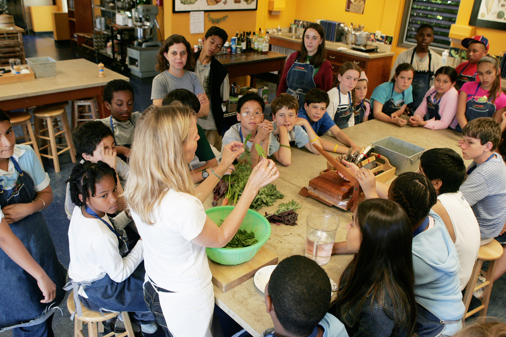

Introduction
In the connected world of today, our personal and professional lives are greatly shaped by our sense of community and teamwork. The capacity to interact with people, exchange ideas, and cooperate to achieve shared objectives is essential for success and development in all contexts—including the workplace, schools, and society at large. This content page examines a number of community and collaboration-related topics, from their value in promoting innovation and creativity to their influence on creating resilient societies. Join us as we explore how these ideas might enable people and organizations to prosper in a world that is becoming more and more collaborative.
Building Strong Communities
Establishing robust communities is crucial in cultivating a feeling of inclusion and reciprocal assistance among people. A strong community offers a web of connections that fosters shared values, improves social cohesiveness, and fosters an environment of support where members can prosper. Open communication, trust, and active engagement are the cornerstones of this collective achievement. Communities can better address shared difficulties and foster a feeling of purpose by allowing members to offer their special talents and viewpoints. Robust communities are vital for both individual satisfaction and the progression of society because they foster social progress and resilience in addition to promoting the well-being of their members.
Innovative Solutions Through Collaborative Problem-Solving
The dynamic process of collaborative problem-solving, where a range of viewpoints and experience come together to confront complicated challenges, frequently yields innovative solutions. When people from various fields and backgrounds collaborate, they bring special perspectives and innovative ideas that can result in discoveries that might not be achievable through individual efforts. Collaboration creates a space where team members may openly exchange ideas, offer helpful criticism, and build upon one another's work, all of which promotes innovation. Using a collaborative approach not only improves the quality of solutions but also speeds up the problem-solving process by identifying potential hazards and optimizing techniques with the support of diverse opinions. In the end, cooperative problem-solving leverages the strength of collaboration to create creative solutions that are more resilient, efficient, and flexible to changing conditions.